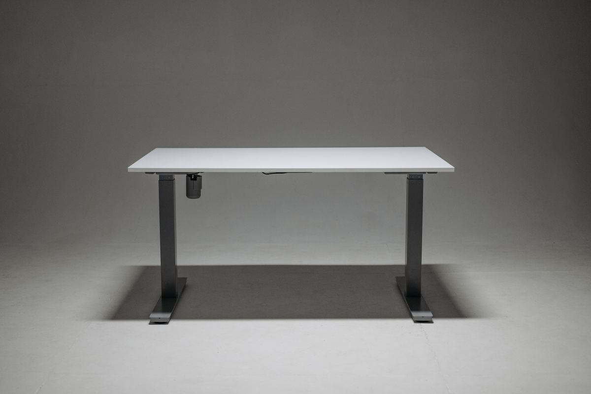
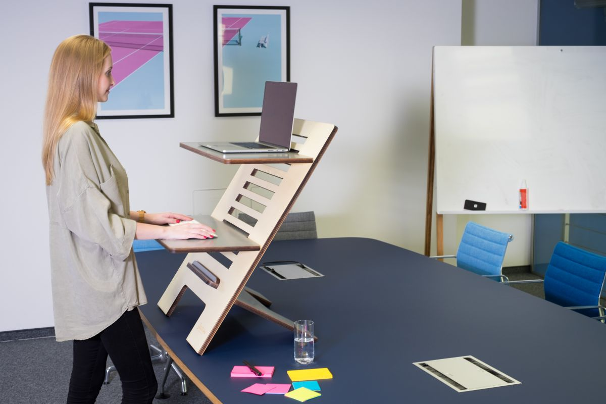
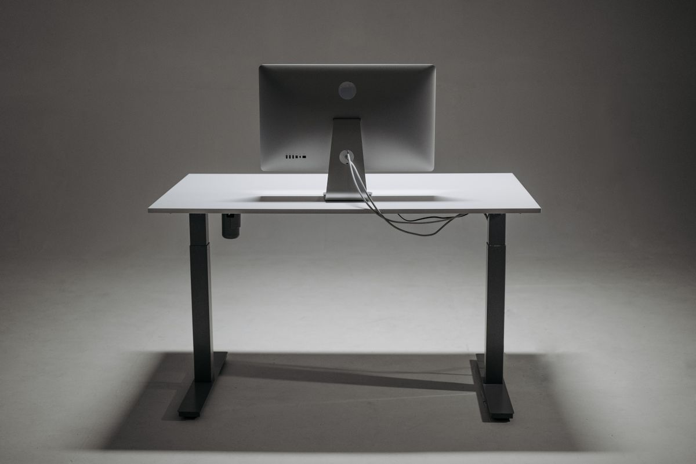
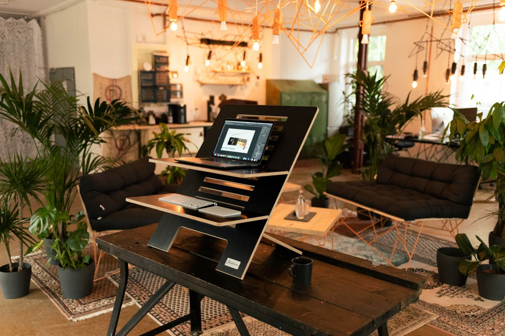

โต๊ะทำงานปรับระดับได้ คุ้มค่าจริงไหม และควรเลือกแบบไหนให้เหมาะกับตัวเอง
โต๊ะทำงานปรับระดับได้ (Standing Desk) คุ้มค่าจริงไหม ช่วยอะไรได้บ้าง มีกี่แบบ ทั้งมอเตอร์ไฟฟ้า มือหมุน ขาโต๊ะแยก และ Desk Converter พร้อมเกณฑ์การเลือกซื้อ
อัปเดต กรกฎาคม 2026
การนั่งทำงานต่อเนื่องเป็นเวลานานหลายชั่วโมงต่อวันถูกงานวิจัยด้านสุขภาพหลายชิ้นชี้ว่าเป็นพฤติกรรมที่ส่งผลเสียต่อร่างกายไม่ต่างจากการสูบบุหรี่ในแง่ของความเสี่ยงโรคเรื้อรัง ทั้งปัญหาหลัง ไหล่ ระบบไหลเวียนเลือด และน้ำหนักตัวที่เพิ่มขึ้น โต๊ะทำงานปรับระดับได้ หรือ Standing Desk จึงกลายเป็นอุปกรณ์ที่หลายคนเริ่มให้ความสนใจมากขึ้นเรื่อย ๆ ในช่วงหลัง
แต่โต๊ะปรับระดับก็มีหลายแบบ หลายราคา และไม่ใช่ทุกรุ่นที่เหมาะกับทุกคน บทความนี้จะพาไปทำความเข้าใจว่าโต๊ะปรับระดับช่วยอะไรได้บ้าง มีแบบไหนให้เลือก และควรพิจารณาอะไรก่อนตัดสินใจซื้อ
โต๊ะปรับระดับช่วยอะไรได้บ้าง

ประโยชน์หลักของโต๊ะปรับระดับคือการเปิดโอกาสให้สลับท่าทางระหว่างวันทำงาน แทนที่จะนั่งท่าเดิมตลอดทั้งวัน การยืนทำงานสลับกับนั่งเป็นระยะช่วยกระตุ้นการไหลเวียนเลือด ลดอาการเมื่อยล้าจากการนั่งนาน และยังช่วยให้รู้สึกกระปรี้กระเปร่าขึ้นในช่วงบ่ายที่มักจะง่วงซึม
นอกจากนี้การได้ขยับเปลี่ยนความสูงโต๊ะบ่อย ๆ ยังส่งผลทางจิตวิทยาเล็กน้อยที่ช่วยกระตุ้นความตื่นตัว และเป็นการบังคับให้ลุกขยับร่างกายซึ่งเป็นสิ่งที่คนทำงานหน้าคอมพิวเตอร์มักขาดไปโดยไม่รู้ตัว
ประเภทของโต๊ะปรับระดับที่พบได้บ่อย

โต๊ะปรับระดับด้วยมอเตอร์ไฟฟ้า
เป็นแบบที่ได้รับความนิยมมากที่สุดในปัจจุบัน เพราะปรับความสูงได้ง่ายเพียงกดปุ่ม บางรุ่นมีหน่วยความจำสำหรับบันทึกระดับความสูงที่ใช้บ่อย ทำให้สลับระหว่างท่านั่งกับยืนได้รวดเร็วโดยไม่ต้องปรับใหม่ทุกครั้ง
โต๊ะปรับระดับด้วยมือหมุนหรือคันโยก
ราคาประหยัดกว่าแบบมอเตอร์ไฟฟ้า เหมาะกับคนที่ไม่ได้ต้องการสลับความสูงบ่อย ๆ ระหว่างวัน แต่การปรับแต่ละครั้งจะใช้เวลาและแรงมากกว่า
ขาโต๊ะปรับระดับแยกต่างหาก (Desk Frame)
เหมาะกับคนที่มีหน้าโต๊ะเดิมอยู่แล้วและไม่อยากซื้อโต๊ะทั้งชุดใหม่ สามารถซื้อเฉพาะขาโต๊ะมอเตอร์มาประกอบกับหน้าโต๊ะเดิมได้ ประหยัดกว่าและยังใช้ของเดิมที่ชอบอยู่แล้วต่อไปได้
ที่วางแล็ปท็อปปรับระดับแบบตั้งบนโต๊ะ (Desk Converter)
เป็นทางเลือกสำหรับคนที่ยังไม่พร้อมลงทุนโต๊ะใหม่ทั้งตัว อุปกรณ์นี้วางทับบนโต๊ะเดิมและยกขึ้นลงได้ ราคาย่อมเยากว่ามาก แต่พื้นที่วางของอาจจำกัดกว่า
ตัวเลือกที่น่าสนใจ

ขาโต๊ะปรับระดับด้วยมอเตอร์ไฟฟ้าคู่ พร้อมหน่วยความจำ
มอเตอร์คู่ทำให้ปรับความสูงได้นิ่งและรับน้ำหนักได้มากกว่าแบบมอเตอร์เดี่ยว เหมาะกับคนที่มีจอคู่หรืออุปกรณ์บนโต๊ะเยอะ
Desk Converter แบบยกได้ทั้งจอและคีย์บอร์ด
เหมาะกับคนที่อยากลองประสบการณ์ยืนทำงานก่อนตัดสินใจลงทุนโต๊ะเต็มรูปแบบ ติดตั้งง่าย ไม่ต้องเปลี่ยนโต๊ะเดิม
โต๊ะปรับระดับมือหมุนสำหรับพื้นที่ขนาดเล็ก
ตัวเลือกประหยัดสำหรับคนที่มีงบจำกัด แต่ยังต้องการปรับความสูงได้บ้างเป็นครั้งคราว เหมาะกับห้องที่มีพื้นที่ไม่มาก
แผ่นรองยืนกันเมื่อยเท้า (Anti-Fatigue Mat)
อุปกรณ์เสริมที่มักถูกมองข้าม แต่จำเป็นมากสำหรับคนที่เริ่มยืนทำงาน ช่วยลดแรงกดที่ฝ่าเท้าและลดอาการปวดขาเมื่อยืนนาน
เกณฑ์การเลือกซื้อโต๊ะปรับระดับ
ช่วงความสูงที่ปรับได้ ควรเช็กว่าช่วงต่ำสุด-สูงสุดครอบคลุมทั้งท่านั่งและยืนของตัวเองหรือไม่ คนตัวสูงหรือตัวเตี้ยควรวัดสัดส่วนตัวเองก่อนเทียบกับสเปกสินค้า
น้ำหนักที่รับได้ หากมีจอหลายจอ คอมพิวเตอร์ตั้งโต๊ะ หรืออุปกรณ์หนัก ควรเลือกโต๊ะที่รับน้ำหนักได้มากพอ ไม่ควรเลือกแบบที่รับน้ำหนักได้พอดีเป๊ะกับของที่มี เผื่อไว้สำหรับอุปกรณ์ที่อาจเพิ่มในอนาคต
ความเร็วและความนิ่งในการปรับ โต๊ะที่ปรับเร็วเกินไปหรือสั่นมากขณะปรับอาจทำให้ของบนโต๊ะล้มหรือหกได้ ควรเลือกรุ่นที่มีรีวิวยืนยันเรื่องความนิ่งขณะทำงาน
เสียงขณะทำงานของมอเตอร์ สำหรับคนที่ทำงานในพื้นที่เงียบหรือมีประชุมออนไลน์บ่อย ควรเลือกรุ่นที่มอเตอร์เสียงเบา
พื้นที่ห้องและงบประมาณ โต๊ะเต็มรูปแบบให้ความสวยงามและฟังก์ชันครบกว่า แต่ถ้างบจำกัดหรือพื้นที่ไม่มาก การเริ่มจาก Desk Converter ก็เป็นทางเลือกที่สมเหตุสมผล
สรุป
โต๊ะทำงานปรับระดับได้เป็นการลงทุนที่ช่วยเปลี่ยนพฤติกรรมการนั่งทำงานทั้งวันให้มีการขยับร่างกายมากขึ้น ซึ่งส่งผลดีต่อสุขภาพในระยะยาว การเลือกประเภทโต๊ะให้เหมาะกับงบประมาณ พื้นที่ และรูปแบบการทำงานของตัวเองเป็นสิ่งสำคัญที่สุด ไม่จำเป็นต้องเริ่มต้นด้วยโต๊ะราคาแพงที่สุด แค่เริ่มจากการปรับเปลี่ยนท่าทางให้หลากหลายขึ้นก็ถือเป็นก้าวแรกที่ดีต่อสุขภาพแล้ว
บทความนี้มีลิงก์ affiliate เมื่อคุณซื้อผ่านลิงก์ เราอาจได้รับค่าคอมมิชชั่นโดยที่คุณไม่ต้องจ่ายเพิ่ม